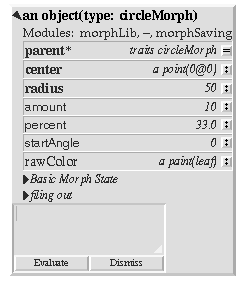

Building a pie wedge morph
Copy a circleMorph, add amount, percent, startAngle.

|
Building a pie wedge morph
A pie wedge is just a segment of a circle, so we will start with a circleMorph. Get a
copy of the prototype using
circleMorph copy
We next some state to define which section of the circle is drawn and what quantity
it represents. Add the following slots:
percent <- 33.0
startAngle <- 0
amount <- 10
The startAngle slot defines the angle of the start of the pie wedge. The angle is given
in degrees, where zero is at 3 o'clock and the angle increases counter-clockwise, as
per geometrical convention. The size of the pie wedge is defined by the percent slot,
where 25% is a quarter of a circle, 50% is a half circle, and so on. The amount slot
defines what quantity the pie wedge represents. The idea is that the client will
specify the amount for each wedge and the enclosing pie chart will compute what
fraction of the pie each wedge represents and set the percent slot accordingly.
|